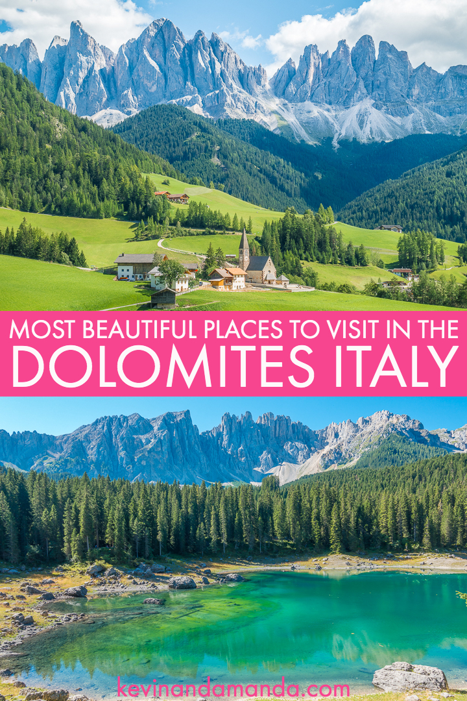
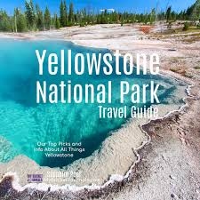
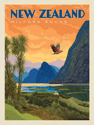

Italy is one of our personal Favorite destination worldwide! And since we live in Europe, we travel there quite often. But somehow it took us years to discover one of its most beautiful regions, the Dolomites. These stunning mountains are worth a trip from the other side of the world. We have visited some of the most beautiful mountain destinations such as Switland, Austria, Western Canada, New Zealand or Norway. But the Dolomite save it all in one place. The azure-blue lakes of canada, Alpine scenery of Austria and Switzerland, and the rougher landscapes of Norway or New Zealand. If you love mountains, you will love it here! For more Information Visit Dolomites, Italy!
Yellowstone National park is everything you would expect it to be and so much more. This is one of the most diverse National Parks in the United State. Top spot travel where inspiration meets destination! Yellowstone is a magical place with beatiful landscapes, an incredible variety of wildlife, sputing geysers, colorful geothermal features, deep canyons, lush valley, and even hot rivers that you can swim in. Definitely, a place you should put on your bucket list!. For more Information Visit Yellowstone National Park, USA!
Milford Sound Fjord on the Southern Island of New Zealand is one of the most beautiful fjords in the world. it will take your breath away! New Zealand is high on top of the most beautiful nature destination worldwide, and Milford Sound is just one of the many natural landmark we visited in New Zealand. For more Information Visit Milford Sound, New Zealand!
